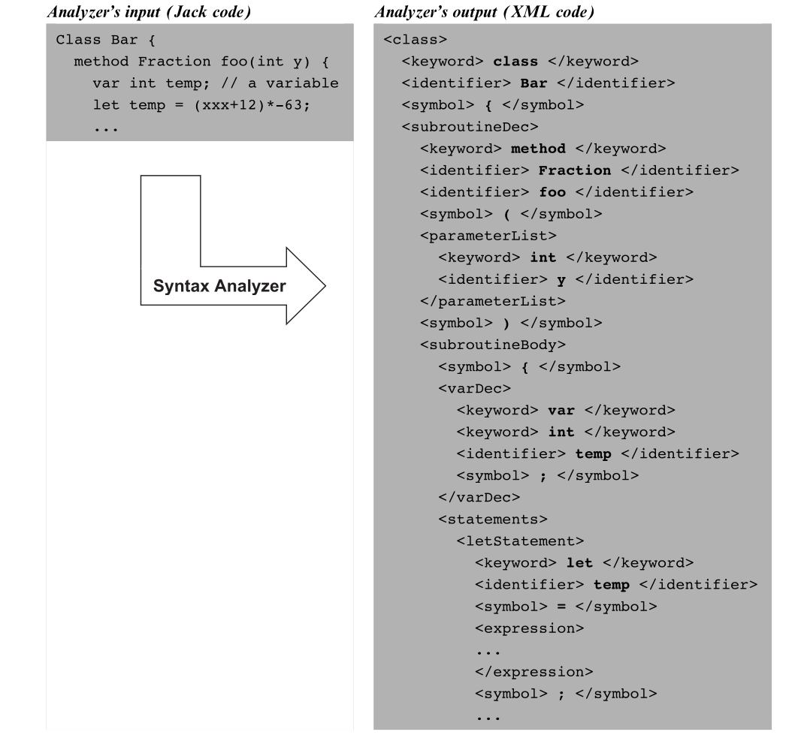

Building the Jack Syntax Analyzer
From the Jack grammar to structured XML.
Three Layers of Syntax
Classes, class variables, subroutines, parameters, and local variables.
let, if, while, do, and return.
Terms, operators, array access, subroutine calls, constants, and variables.
The compilation unit is one class stored in one .jack file.
The Shape of a Jack Class
class:
'class' className '{'
classVarDec*
subroutineDec*
'}'
classVarDec:
('static' | 'field') type varName (',' varName)* ';'All class-variable declarations precede all subroutine declarations; the grammar makes this ordering explicit.
Match Source Lines to Grammar Elements
class Counter {
field int value;
constructor Counter new() { ... }
method void increment() { ... }
}CounterclassNamefield int value;classVarDecconstructor ...subroutineDecmethod ...subroutineDecFive Alternatives, Recognized by One Token
statements: statement*
statement:
letStatement | ifStatement | whileStatement |
doStatement | returnStatementletifwhiledoreturnThese keywords allow compileStatements() to dispatch directly to the correct routine and to stop when the next token is not a statement keyword.
Where Does the Statement Sequence End?
{
let x = x + 1;
do Output.printInt(x);
return;
}- Which routine handles each statement?
- What token tells
compileStatements()to stop?
compileLet(), compileDo(), and compileReturn(); the closing } ends the sequence.An Expression Is a Sequence of Terms
expression: term (op term)*
term: integerConstant | stringConstant | keywordConstant |
varName | varName '[' expression ']' | subroutineCall |
'(' expression ')' | unaryOp termJack's grammar does not encode conventional operator precedence. Parentheses must express the required grouping.
Distinguish Identifier-Led Terms
For each token prefix, choose the grammatical form.
x +variablea [array entrymove (subroutine callMath .qualified subroutine callThis is the principal place where the compilation engine needs one-token lookahead.
XML Is a Textual Parse Tree

Nested XML elements make the parser's structural decisions visible and testable before code generation is added.
Terminals and Non-Terminals Use Different Tags
<keyword> return </keyword>
<symbol> ; </symbol>Its tag records one of the five token types.
<returnStatement>
... recursive contents ...
</returnStatement>Its tag encloses the recursively parsed structure.
Write the XML for a Return Statement
return;<returnStatement>
<keyword> return </keyword>
<symbol> ; </symbol>
</returnStatement>No <expression> appears because the expression in the grammar is optional.
Three Modules, Three Responsibilities
Keeping these responsibilities separate allows each part to be implemented and tested independently.
The Top-Level Driver
- Accept one
Xxx.jackfile or a directory containing Jack files. - For each source file, create a
JackTokenizer. - Create the corresponding
Xxx.xmloutput file. - Create a
CompilationEngineand begin withcompileClass().
Xxx.jack → Xxx.xml
Every Routine Has the Same Contract
Precondition: construct xxx is next in the token stream.
Work: recognize terminals, recursively compile its non-terminals, and emit XML tags.
Postcondition: the tokenizer is positioned exactly after xxx.
compileClass()compileStatements()compileWhile()compileExpression()compileTerm()Plan compileWhile()
whileStatement:
'while' '(' expression ')' '{' statements '}'Write the sequence of emit, consume, and recursive-call operations.
- Open
<whileStatement>; consumewhileand(. - Call
compileExpression(); consume)and{. - Call
compileStatements(); consume}. - Close
</whileStatement>.
Build and Test in Two Stages
Generate XxxT.xml. Compare it with the supplied token files before beginning the parser.
Begin with expressionless programs, then add expressions and test complete Jack programs.
ExpressionlessSquare→Square→ArrayTestUse the supplied comparison files as the contract. Indentation is for readability; the XML structure and tokens must match.
The Syntax Analyzer Makes Structure Explicit
Next chapter: keep the parser, add semantic information, and generate executable VM code.